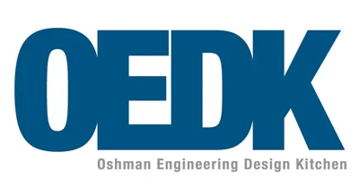

August 2024 - Current
Student at Rice University
Student at Rice University
- Majoring in Mechanical Engineering with a specialization in Mechanics/Dynamics
- Minoring in Engineering Design
- Completed coursework in statics, thermodynamics, SolidWorks, MATLAB, Python, ordinary differential equations, and prototyping & fabrication
- GPA: 3.93 / 4.00

January 2025 - Current
Oshman Engineering Design Kitchen Lab Assistant
Oshman Engineering Design Kitchen Lab Assistant
- Assisted dozens of students, guiding them in equipment operation as well as offering feedback on designs and planned fabrication
- Led FabShop workshops to teach students foundational prototyping techniques and enhance their hands-on fabrication skills
- Operated a laser cutter, waterjet, drill press, 3D FDM printers, sandblaster, tabletop CNC machines, and a plasma cutter
January 2025 - May 2028
Intern at Sector Microwave Industries
Intern at Sector Microwave Industries
- Assembled complex subassemblies for diverse industries, including Navy and space sectors
- Processed hundreds of wires through manual and automated cutting and stripping techniques to ensure precision and reliability.
- Tinned hundreds of wires using both soldering irons and tin dipping and successfully integrated them to existing systems.
- Conducted electrical testing on motors using multimeters and megger meters, verifying compliance with operational standards before delivery.